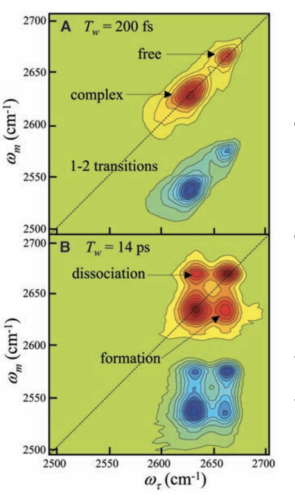
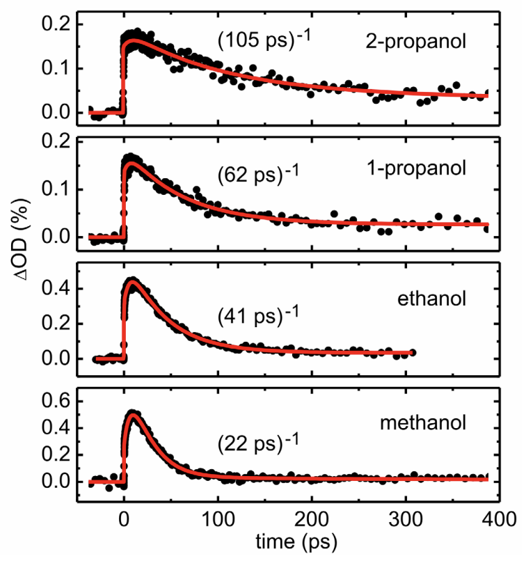

While IR spectroscopy is still taught in introductory organic chemistry classes, it has been almost completely replaced by NMR spectroscopy and mass spectrometry for
routine structural assignments. Still, IR spectroscopy offers unique advantages to the mechanistic chemist: the short timescale of IR allows for the
observation of transient molecular interactions even when slower techniques like NMR only yield time-averaged data,
and IR absorbances can easily be perturbed by isotopic substitution while leaving the underlying potential-energy surface unchanged.
These advantages are nicely illustrated in the IR spectrum of a mixture of phenol, benzene, and CCl4,
which shows two peaks corresponding to free phenol (2665 cm-1) and phenol complexed to benzene (2631 cm-1).
(The phenolic proton was replaced by deuterium, moving the O–D stretch away from C–H stretches and into a vacant region of the spectrum.)
From the standpoint of assessing purity, it might be upsetting that a pure compound shows two peaks;
from the standpoint of a mechanistic chemist, the ability to distinguish two different solvation environments experimentally is incredible.
IR spectrum of phenol in benzene/CCl4 (Fayer Figure 2).
Unfortunately, measuring this spectrum tells us about the thermodynamics of the equilibrium, but not the kinetics;
there’s not a good way to determine how fast these two species are exchanging from these data.1
In 2005, Fayer and coworkers developed a pump–probe infrared spectroscopy method called “2D IR” to tackle this problem.
In 2D IR, the system is excited, allowed to evolve for a variable length of time Tw,
and then triggered to emit a vibrational “echo” (in analogy to spin-echo NMR experiments)
which still contains phase information from the original excitation.
(There are a lot of non-trivial spectroscopic details here which I don’t really understand.)

2D IR spectrum of phenol in benzene/CCl4 (Fayer Figure 3).
The net result of this is a two-dimensional plot showing initial and final frequencies, in which cross-peaks represent molecules which have moved between one state and another during
Tw.
By surveying a range of Tw values, the kinetics of exchange can be quantitatively determined: in this case, the time constant τ was found to be 8 ± 2 ps.
This result might not seem thrilling (“fast exchange is fast”), but this experiment can be used to measure rates of phenol dissociation from electronically-varied aromatic rings,
or compared to results from molecular dynamics simulations for benchmarking purposes.
While many groups are now using 2D IR, this recent paper
from Tokmakoff and coworkers studying superconcentrated electrolytes stood out to me as particularly exceptional.
In superconcentrated solutions like those found in batteries (e.g. 15 M LiTFSI in acetonitrile), the extreme salt concentration leads to high viscosity and substantial aggregation,
leading to questions about how charge transport in batteries occurs.
Some simulations seem to suggest that, rather than “vehicular diffusion” wherein a cation diffuses along with its solvent shell,
charge transport occurs through “structural diffusion” involving breaking/reforming of cation–solvent interactions.
(This is analogous to the Grotthuss mechanism of proton transport in water.)
Illustration of different transport mechanisms (Tokmakoff Figure 8).
Since distinct C≡N stretches are visible for cation-bound and free acetonitrile, it might seem straightforward to simply measure time evolution of the cross-peaks
and thereby determine the rate of solvent exchange.
Unfortunately studying exchange in the bulk solvent is complicated by the fact that direct vibrational energy transfer can occur through collisions,
meaning that cross-peaks are observed even in the absence of exchange.
The authors solve this problem by using a mixture of D3CCN and D3C13CN:
while cross-peaks between the heavy and light isotopologues can only occur through energy transfer,
cross-peaks between the same isotopologue can also occur through chemical exchange.2
2D IR measurement of 1.9 M LiTFSI in acetonitrile (Tokmakoff Figure 5).
They find that the time evolution of all cross-peaks is identical under all conditions,
indicating that solvent exchange must be slower than energy transfer (~20 ps) for any cation or concentration studied.
This suggests that, contrary to a variety of theoretical studies, structural-diffusion mechanisms for cation transport are quite slow and unlikely to be relevant for these electrolytes.
This study is a beautiful example of designing a cutting-edge spectroscopic experiment to solve a key scientific problem,
and reminds me how much we still don’t know about “simple” systems like ionic solutions.
I would love to see techniques like this applied to study reactive intermediates in the ground state, e.g. Olah-style superacid solutions!
More broadly, it’s exciting to see how 2D IR can advance in less than two decades from being limited to simple model systems to
now being used to tackle the biggest open questions in chemistry. What new techniques being developed today will rise to prominence in the coming decades?
Thanks to Joe Gair for reading a draft of this.
Footnotes
For a different way to extract rates from vibrational spectra, see this work on line-broadening analysis.
In my experience, most computational chemists only know a handful of basic Bash commands, which is a shame because Bash is incredibly powerful.
Although I'm far from an expert, here are a few commands I frequently find myself using:
1. sed For Find-and-Replace.
$ sed -i “s/b3lyp/m062x/” *.gjf
If you want to resubmit a bunch of transition states at a different level of theory, don't use a complex package like cctk!
You can easily find and replace text using sed, which runs almost instantly even for hundreds of files.
(Note that the syntax for modifying in-place is slightly different on macOS.)
2. Renaming Lots of Files
$ for f in *.gjf; do mv $f ${f/.gjf/_resubmit.gjf}; done
Unfortunately, you can't rename lots of files with a single command in Bash, but using a for; do; done loop is almost as easy.
Here, we simply use parameter expansion to replace the end of the filename,
but the possibilities are endless.
3. Counting Occurrences in a File
$ for f in */*.out; do echo $f; grep "SCF Done" $f | wc -l; done
Here we again use a for loop, but in this case we use grep to search for the string "SCF Done".
We then pipe the output of this search to the wc -l command, which counts the number of lines.
Since grep returns each result on a new line, this prints the number of optimization steps completed.
Although the slurm workload manager allows one to cancel jobs by partition or by user, to my knowledge there isn't a way to cancel jobs that match a certain name.
This is a problem if, for instance, you're working on two projects at once and want to resubmit only one set of jobs.
Here, we use squeue to get a list of job names, search for the names that match, extract the job number using awk,
and finally cancel each job by building the scancel commands with xargs.
(This should be easily modifiable for other workload managers.)
This thesis, from Christian Sailer at Ludwig Maximilian University in Munich,
is one of the most exciting studies I’ve read this year.
Sailer and coworkers are able to generate benzhydryl carbocations from photolysis of the corresponding phosphonium salts, and can monitor their
formation and lifetime via femtosecond transient absorption spectroscopy.
(There are some technical challenges which I’ll omit here.)
They then use this platform to study the addition of alcohols to these cations and obtain nice kinetic data on some shockingly fast reactions:
Rates of reaction between methanol and various cations (page 77).
Although these species are extremely reactive, substituent effects are still paramount:
adding two methyl groups to stabilize the benzhydryl carbocation extends its lifetime by 6.3x, whereas adding two electron-withdrawing fluorines shortens its lifetime by 5.6x.
The most electrophilic species studied, (dfp)2CH+, reacts with methanol in only 2.6 ps!
These findings demonstrate how even an extremely reactive carbocation like Ph2CH+ doesn’t react at the rate of diffusion with nucleophiles;
although this reaction is almost instant on an absolute scale, there are still tens or hundreds of unproductive alcohol–carbocation interactions before product is finally formed.
In contrast to Sailer’s results on the electrophile, which align nicely with results from more conventional kinetic measurements, different alcohols behave very differently:

Rates of reaction between mfp(Ph)CH+ and various alcohols (page 75).
This rate difference is surprising, since Mayr’s measurements demonstrate that there’s no conventional difference in nucleophilicity between these species—and intuitively,
one wouldn’t expect adding additional carbons to substantially hinder approach to the oxygen.
However, as Sailer notes, larger molecules rotate and reorient much more slowly than smaller molecules.
This is evident from a number of different physical properties: larger alcohols form more viscous liquids and have slower dielectric relaxation times
(how long it takes them to reorient in response to a new charge).
Sailer thus concludes that, as the timescale of reaction approaches the timescale of molecular motion, nucleophile reorientation becomes rate-limiting.
This is a really cool conclusion, and highlights how the environment that reacting molecules “see” differs from our macroscopic chemical intuition:
although we think of reorientation as barrierless, for very fast reactions reorientation is actually slower than bond formation.
(Philosophically related, in my mind, is Dan Singleton’s work on non-instantaneous solvent relaxation,
and how this influences the stability of reactive intermediates.)
Thus, this work simultaneously highlights both similarities and differences between ultrafast reactions and their benchtop congeners.
My hope is that future studies can find ways to move beyond just benzhydryl cations and study elementary questions of selectivity with different nucleophiles (e.g. addition/elimination).
The ability to observe what is typically the “invisible” step in SN1 is incredibly powerful, and I think we’ve barely scratched the surface with what we can learn from measurements like these.
Now that our lab’s site-selective glycosylation has been published,
I wanted to share some reflections from the computational portion of the work.
As one might expect, finding transition states for these large and flexible catalysts was a substantial challenge.
We ended up using an ONIOM-type scheme to model most of the catalyst using PM7,
which meant only the thioureas and the “northern” amide (which acts as a general base) needed to be computed using DFT.
Even with this approximation, it took three months to find the first glycosylation transition state.
Although we ended reoptimizing everything with all-atom DFT for publication,
using PM7 for non-essential atoms was crucial in accelerating the initial transition-state search.
Working on this project also gave me a new appreciation for all of the work done to develop linear-scaling DFT methods.
The size of the full system meant that even routine Hessian calculations with a double-zeta basis set took most of a week;
without all the work that’s been done to speed up calculations on large systems (e.g. the fast multipole method),
these computations would not even have been possible.
Hopefully, calculations on systems of this size will become routine in the coming decade.
After finding the (1,2) and (1,3) transition states, we were surprised (and disappointed) to find that the predicted selectivity was completely backwards from that observed experimentally.
Closer observation of the transition states showed that the hydrogen-bonding network in the unprotected acceptor was quite different between the two structures,
leading us to suspect that this energetic difference might be an artifact of implicit solvation. Since the reaction is run in diisopropyl ether, a hydrogen-bond acceptor,
we reasoned that the unprotected hydroxyls would be able to form hydrogen bonds with solvent ether molecules and not with the donor.
CYLView visualization of the solvated complex
To test this idea, we decided to attempt explicit solvent calculations. Although a full ab initio molecular dynamics study of this system was clearly out of the question,
we were able to run molecular dynamics using Grimme’s GFN2-xtb method for the catalyst, donor, and acceptor and the GFN-FF polarizable forcefield for the solvent.
Examination of the pre-(1,3) complex shows that the C4 hydroxyl is indeed solvated by a diisopropyl ether, meaning that the donor–acceptor hydrogen bond predicted by DFT is just wrong.
(As a bonus, we found that no (1,2) preference exists in the ground state, in agreement with the experimental observation that KM is not lower for more selective catalysts.)
Although the coolest solution would have been to do free energy perturbation in explicit solvent to get an accurate ∆∆G between the (1,2) and (1,3) transition states,
technical barriers meant we had to settle for modeling the C4-protected acceptor, which indeed favored the correct product.
Still, I think this approach demonstrates the computational insight that explicit solvent calculations can give even when a full, high-level treatment of the system is unreasonable.
We’ve been developing software to make this sort of molecular dynamics more routine—if you’re interested in using this in your research,
please contact me!